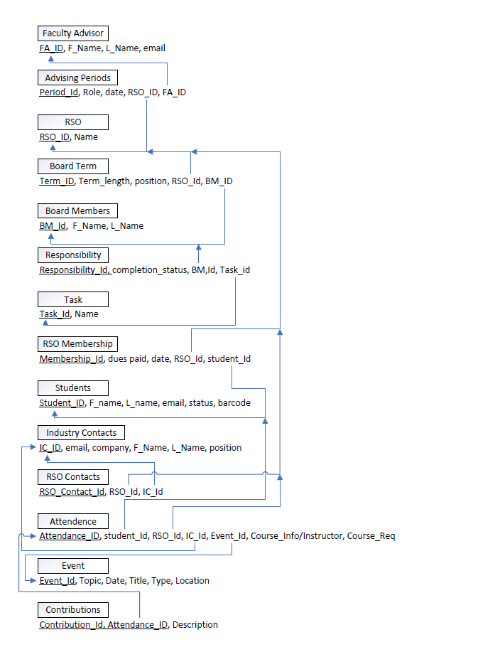
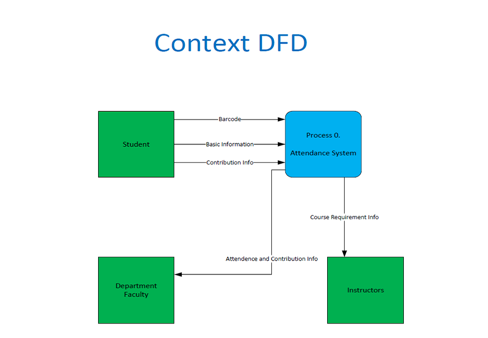
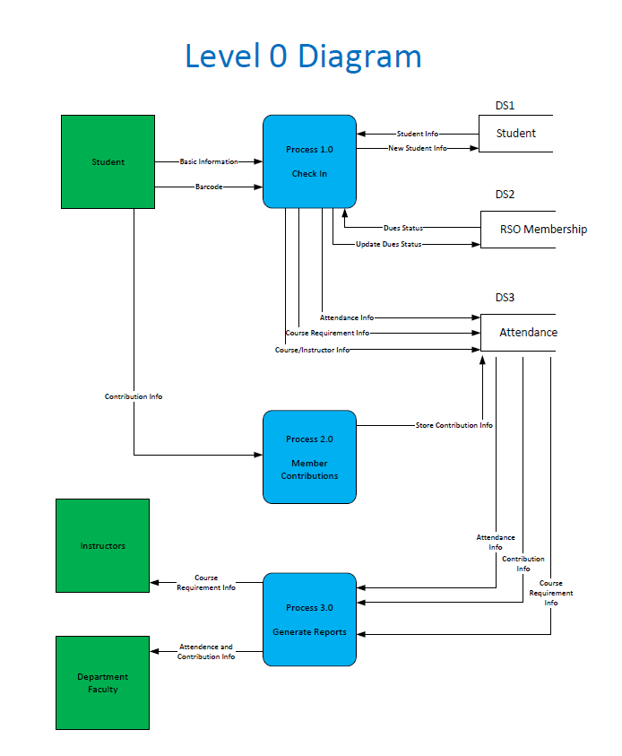

Database Design Project - Resident Student Organizations
Project Overview
For this project I was asked to create database and processing models for the student clubs and orgainazations on a campus. The organization mainly needed conceptiual diagrams like Data Flow Diagrams (DFD) and ERD's that could later be made into a database and software systems. While no architecture or code needed to be written or deployed, it was very important that systems were designed to be functional, normalized, and highly efficient. In order to do this properly I followed the first two phases of the Database Design Process (without the remaining physical and logical design as per the client's request). These phases are business/system equirements collection and conceptual design, and when done correctly they allow systems to be created in the most secure and efficient way possible.
Requirements Collection
The client's inital overview request:
The School of Business at EIU has several Registered Student Organizations (RSOs), such as SHRM, AMA, and AITP. Many RSOs are facing challenges such as recruiting members and keeping track of industry contacts. We would like to design a system for the School of Business, to make it easier to keep track of important information for RSOs, their faculty advisor(s), etc. In the following, basic operations of the RSOs and a list of major issues facing the RSOs are provided. Hopefully, the system you design for the RSO can support the necessary operation of RSOs and help to address those issues.
An additional extended system for tracking event attendance by students using existing barcodes for identification is also needed. Club events wish to have a check in procedure that records students basic information, dues status siginificant contributions to the event, whether they are attending as a course requirement, and if they are which course and corresponding instructor they are attending on behalf of. Attendance and contribution information should then be passed along to the appropriate department faculty, and coure requirement information should be passed to the appropriate instructors.
Additonal requested features included:
While there was more information provided by the client as to some of the finer details of their current needs, this in general summed up the system they wished for us to design. With the requirements and objectives outlined was time to move onto the next phase of the project, Conceptual Designing and Modelling.
Modelling Database Design Part 1 - An Entity Relationship Diagram
This is the final ERD model that I created to meet the relational data needs for the business. Here is how we addressed each business requirement in the design:
Modelling Database Design Part 2 - A Normalized Logical Model
The next step after creating an ERD was to produce a normalized logical model showing table relations with foriegn keys from tables pointing at the primary keys of their source tables. This allows for further refining of the database model by showing any possible threats of data anamolies from dependencies within tables and allows for much easier database implementation in the future when the database is actually developed and deployed. The current model was designed to be normalized to the third normal form, but the developers could decide if they wanted to extend to the fourth or fifth normal forms for further protection if they wanted to (fourth and fifth normal form tend to cover extremely rare cases of anomoloies that a simple system like this likely does not need to protect against).
Context DFD of a club event attendance system.
After building the ERD and logical model that designed the database needed to fulfill the clients needs, I wanted to start designing the requested extended system for event attendance. To start I wanted to created a context DFD that would allow me to conceptualize how the system would work at a high level. Green boxes represent people interacting with the system during various stages, blue rounded boxes represent information being processed in some way by software applications, and arrows indicate the direction of data flowing from one source to another. The first part of the system represents students who would attend the event and pass their information into the system. This information would then get processed and then reported to the faculty and intructors that needed it. This is how the system would roghly operate, but there are definitely more elements interacted with than currently being displayed. In order to gather a deeper understanding of how the system works, we move on to designing the next model called a Level 0 Diagram.
Level-0 DFD of the same club event attendance system.
With this new expanded diagram of the system we can see precisely how the system would work. A new element added to this detailed version is called a datastore (DS1, DS2, and DS3). In this case we are referencing tables created earlier with the ERD and logical models interacting with this extended system. There are now three processes called check in, member contributions, and generate reports that can be implemented as software to make the system fucntion as the client requested. Note that the Level 0 may have more information present than the Context DFD, but it is consistent and matching as well. Now all of the requested information is being stored on event checking and member contribution screening, and is accessed later to generate the needed reports for instructors and faculty in need.
Finishing up the project
I had all the system models developed per the clients requests and all that was needed was to close the project with them. Since I was able to design a functional, secure and efficient system model for each process and functionality needed, they were pleased with the work and it was passed on to the development team to be implemented. System and processing models like these allow organizations to map out all of the requirements before implementation to ensure that systems will work as intended, be resilient and reliable, and can be developed without any oversight. This project was a great opportunity for me to develop my skills as a database and systems developer from a conceptual level, and the knowledge and experience gained from it will help design much better systems moving forward.